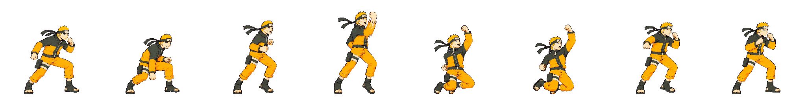
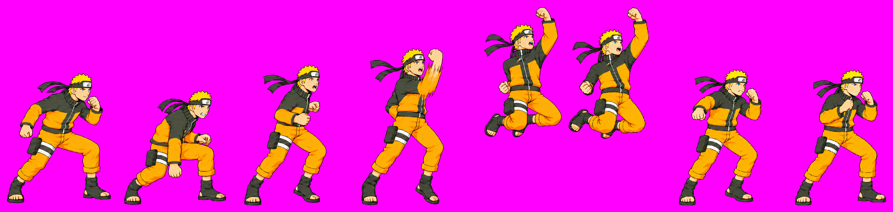
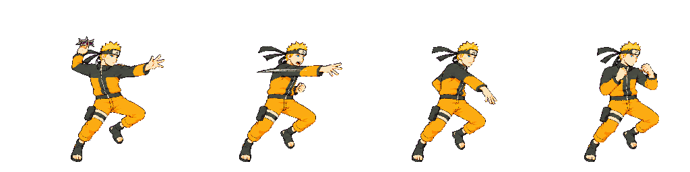
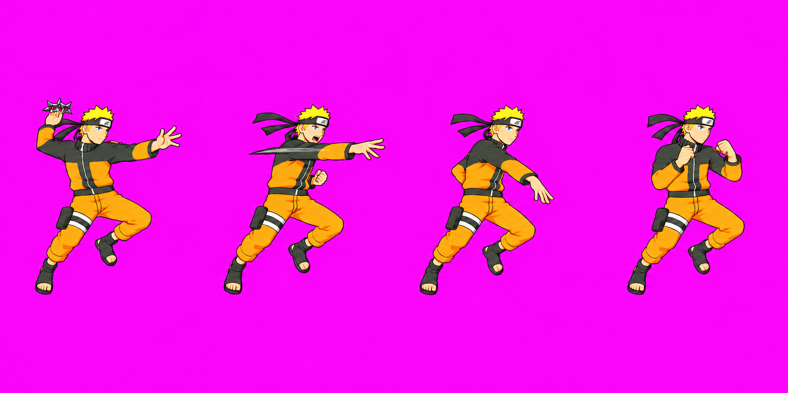
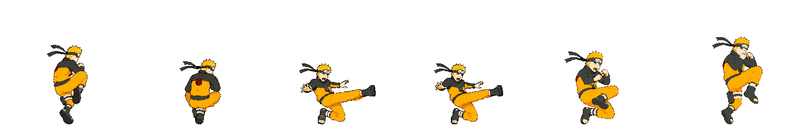
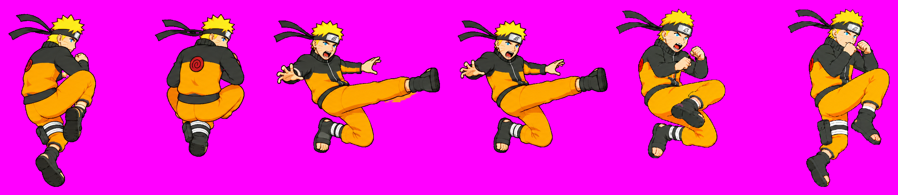
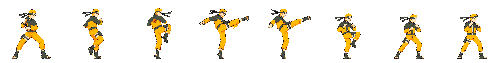
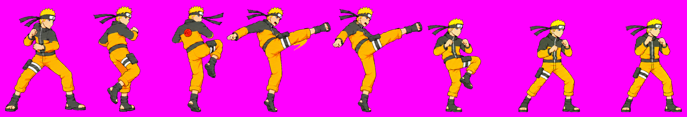

User approved heavy v10, throw v05 and airLight3 v05. Only light4 v05 remains unapproved.
Technical hold: light4 v05. Full strict pack exited 1 and did not write the game atlas. These are diagnostic packed cells from a separate warning-only scratch output, not shipping game art. Heavy v10, throw v05 and airLight3 v05 pass their scale gates; no heavy clipping remains. Light4 exhausted its latest 3 additional generations; f0 remains larger than f2.
All-frame heads sheet · Light4 f0 cast comparison · Measurements
Gate ok; head 0.984; range 0.05. 3/3 extra generations used. Frames f0–f7, at original 256 px density.


Gate ok; head 0.995; range 0.032. 1/3 extra generations used. Frames f0–f3, at original 256 px density.


Gate ok; head 1.003; range 0.084. 3/3 extra generations used. Frames f0–f5, at original 256 px density.


Gate pop; head 1.04; range 0.146. 3/3 extra generations used. Frames f0–f7, at original 256 px density.

